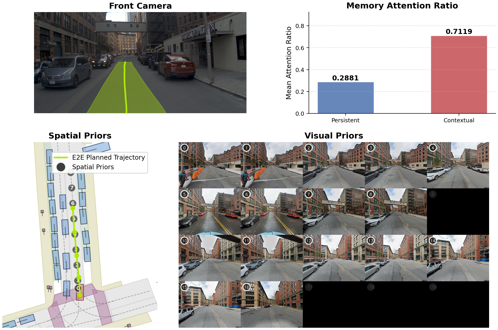
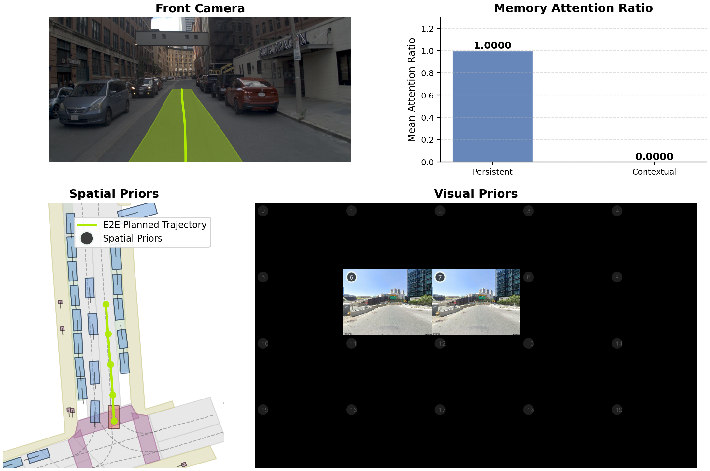

Qualitative Results


Planning behavior with geospatial visual priors across diverse scenes.
Most end-to-end autonomous driving methods rely solely on instantaneous sensor observations, limiting them to reactive behavior without the anticipatory foresight human drivers employ through prior experience. We introduce geospatial visual priors, street-level visual context anchored to the intended driving route, providing visual-spatial foresight independent of real-time sensors. We propose a memory augmentation module featuring a dual-memory architecture and an adaptive memory gate, which can be easily integrated into existing end-to-end approaches. This design pairs a contextual memory for retrieved priors with a persistent fallback memory, and dynamically regulates the influence of memories based on current state compatibility. Evaluated on the NAVSIM-v2 benchmark, our approach consistently improves performance across diverse end-to-end baselines. Furthermore, because these priors are independent of onboard sensors, our method inherently improves robustness against sensor corruption, while the dual-memory design ensures safe fallback when the retrieved priors themselves become unreliable.
Planning behavior with geospatial visual priors across diverse scenes.

Robustness under degraded sensor conditions.

Baseline

Corrupted memory
@misc{prioreye,
title = {PriorEye: Geospatial Visual Priors for End-to-End Autonomous Driving},
author = {Yeon, Kyuhwan and Ramtoula, Benjamin and De Martini, Daniele},
year = {2026},
note = {TODO: complete citation}
}